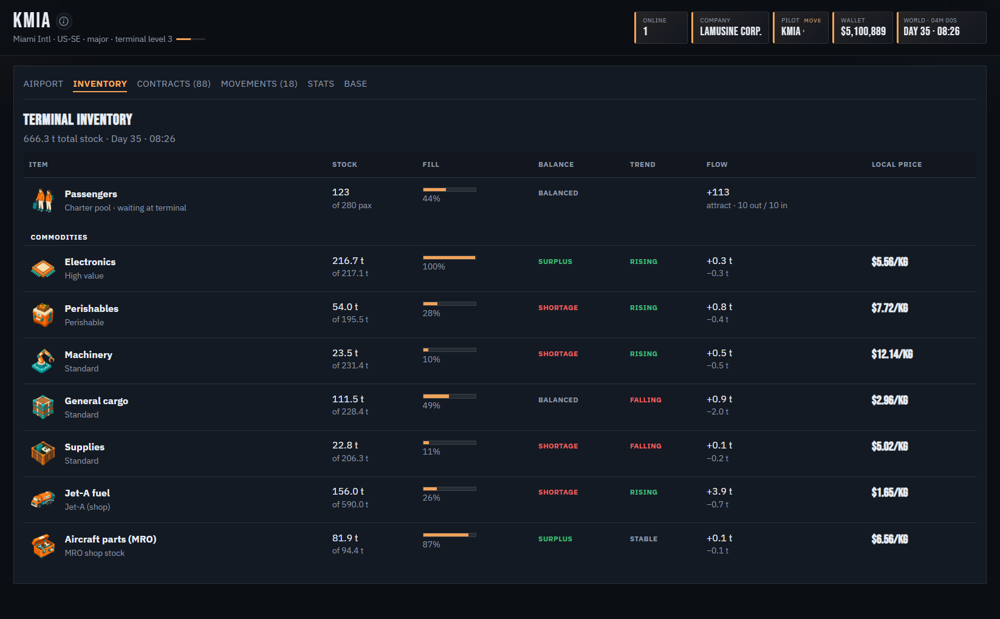
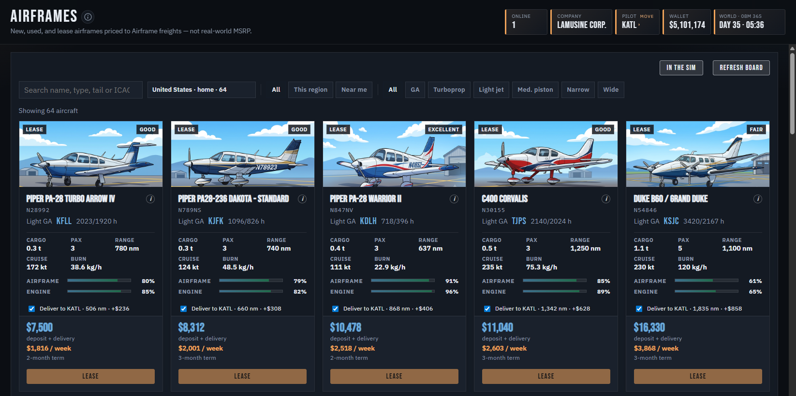
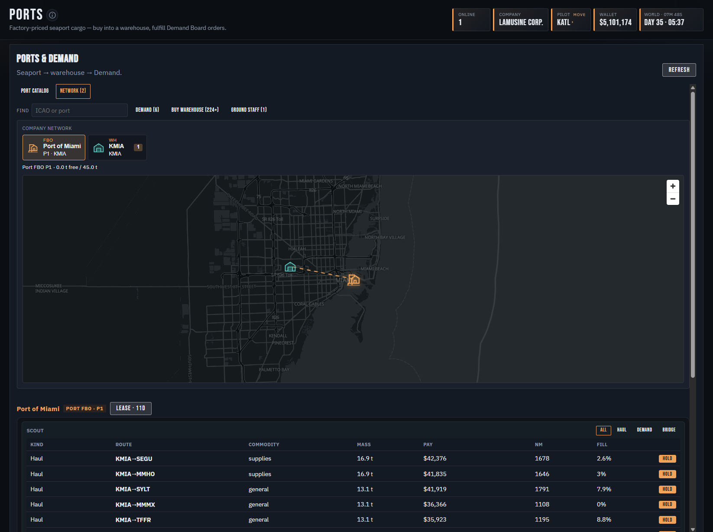
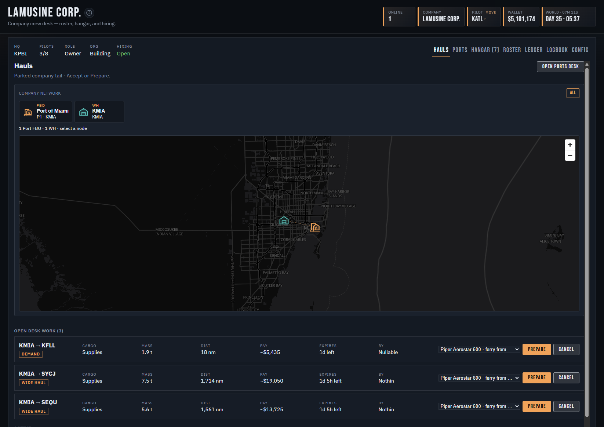

How you play
Airframe sits on top of MSFS. You plan and fly; the career closes the loop when you land.
- Market — pick freight or a tail from the board.
- Dispatch — stage payload, pull a SimBrief OFP, inject fuel and load.
- Fly — MSFS is the sim; Watch tracks the leg while you’re airborne.
- Settle — land, close the job, get paid into the living economy.
Living economy
Open a hub and the terminal shows stock, shortage, flow, and the price on the ramp. The world keeps moving whether you’re online or not.
- Single-player — your local save; NPC operators keep the board alive.
- Multiplayer — one shared world clock; same rules, same scarcity.
- No pay-to-win lots or airframes — money in career comes from flying the job.

Airframes
A finite pool of tails — registrations matter. Buy or lease from the dealer, maintain them, ferry them, sell them.
- Market SKUs matched to live MSFS titles for fuel and payload inject.
- Hangar tracks fuel, hours, condition, and where each tail is parked.
- Homologated types only — if it’s on the board, Career can load it.
- Paints on that aircraft’s Livery tab are fine. Add-ons that show up as their own aircraft are not supported.

Freight, charter & ports
Several desks, one career. You choose how to make money — and how much ground work you automate.
- Freights — classic cargo lots across the map.
- Charter — passenger groups when your cabin fits.
- Ports — ocean hubs, warehouses, Demand holds, and Port FBO desks.

Company & VA
Fly solo on your home company, or publish a virtual airline and share a fleet with pilots.
- Internal Hauls move stock between your warehouses — humans still fly the legs.
- Roster, ranking, and desk tools for owners who want a real airline loop.
- Your personal progression stays yours when you fly for a VA.

Multiplayer
Same installer as single-player. Connect to the shared world when you want scarcity and other operators on the same clock — or stay local and keep your own save.
- World API at world.playairframe.com while you play online.
- Private beta access by invite.
What it is not
- No subscription paywall for core career play.
- No pay-to-win airframes or exclusive lots.
- No map lock — fly the world MSFS gives you.
Status
Private / open beta · Microsoft Flight Simulator 2024 · SimBrief integration